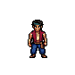
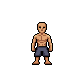
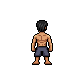
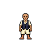
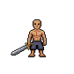
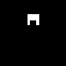

← Bancada técnicaPrimeiro teste de encaixe
Uma pose frontal. Cinco gerações cobradas. Nenhuma animação ou peça final ativada no jogo.
Os três resultados brutos falharam na preservação do corpo. Cabelo também encobriu o rosto. A roupa alterou o shorts. Não são camadas reutilizáveis aprovadas.

Referência originalFrame sul preservado, apenas padding transparente.
Base com rosto · rascunho localCorpo da primeira geração +75 pixels do rosto da correção. Demais pixels preservados. Revisão artística pendente.
Cabelo · reprovadoAltera corpo e apaga 1 pixel de alpha. Cobre o rosto, parecendo cabelo visto de costas.
Roupa · reprovadaAltera 122 pixels fora da região e também muda o shorts.
Espada · reprovadaAltera 372 pixels fora da região do equipamento.Auditoria dos resultados brutos
| Peça | Pixels fora da região | Apagamentos | Resultado |
|---|
| Rosto | 387 | 0 | Reprovado bruto; prévia mascarada separada |
| Cabelo | 378 | 1 | Reprovado |
| Roupa | 122 | 0 | Reprovada |
| Espada | 372 | 0 | Reprovada |
Proposta de máscaras · ainda não geradas
Guias de geração, não sprites: branco permite alteração; preto congela os pixels. A máscara do cabelo preserva o centro do rosto; a da roupa preserva o shorts e as mãos; a da espada delimita o objeto e sua empunhadura. Nenhuma chamada com essas máscaras foi feita.

CabeloRoupaEspadaManifesto e prompts exatos · Receita de reprodução · Relatório técnico